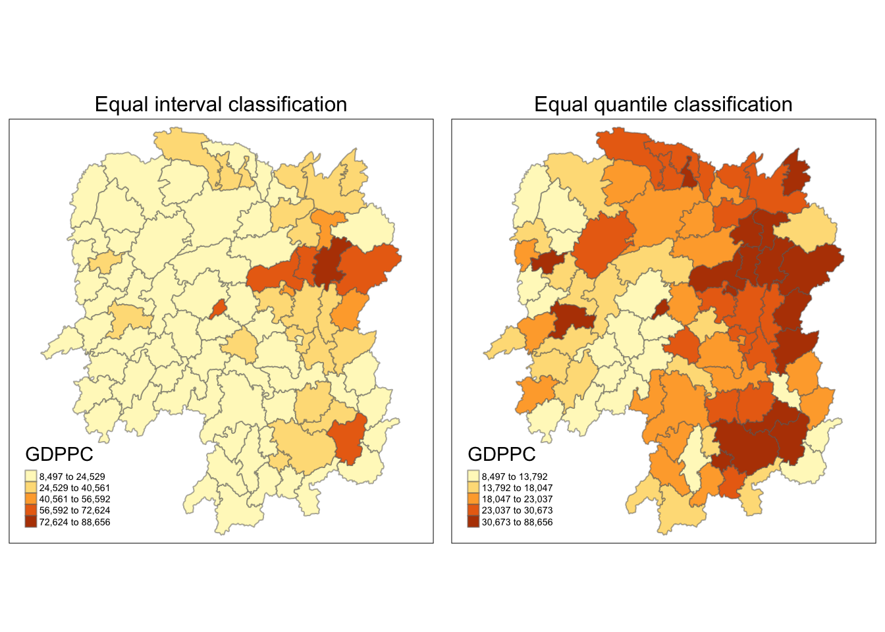
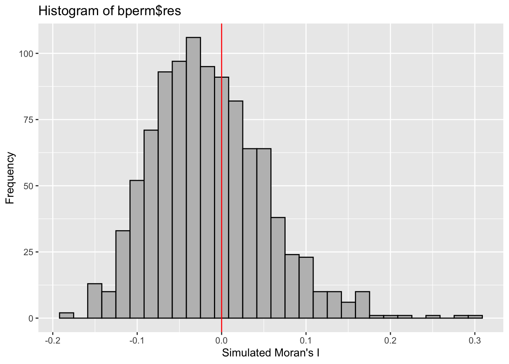

pacman::p_load(sf, spdep, tmap, tidyverse)Global and Local Measures of Spatial Autocorrelation
Overview
This exercise provide the steps of computing the Global and Local Measures of Spatial Autocorrelation using spdep package.
Getting Started
The analytical question
We may ask, is a character or attribute evenly distributed across areas or regions? If they are not, then is there a sign of spatial clustering, and if yes, where are the clusters? Those questions can be applied to a wide range of domains: development planning of city councils, shop outlet location setting of a fashion chain, examining the habitat clusters of a certain plant species, etc.
In this case study, we are interested to examine the spatial pattern of a selected development indicator (i.e. GDP per capita) of Hunan Provice, People Republic of China.
The study area and data
Two data sets will be used in this hands-on exercise, they are:
Hunan province administrative boundary layer at county level. This is a geospatial data set in ESRI shapefile format.
Hunan_2012.csv: This csv file contains selected Hunan's local development indicators in 2012.
We will reuse the data that we exercised in the In-class Exercise 2 - Spatial Weights and Application segment of this website.
Setting the analytical tools
First, we load the necessary R packages.
Getting the Data into the R Environment
Import shapefile into R environment
We import the Hunan shapefile into R using the sf package.
hunan <- st_read(dsn = "~/sylvie-le/ISSS624/In-class_Ex/In-class_Ex1/dataC/geospatial", layer = "Hunan")Reading layer `Hunan' from data source
`/Users/sylvia/sylvie-le/ISSS624/In-class_Ex/In-class_Ex1/dataC/geospatial'
using driver `ESRI Shapefile'
Simple feature collection with 88 features and 7 fields
Geometry type: POLYGON
Dimension: XY
Bounding box: xmin: 108.7831 ymin: 24.6342 xmax: 114.2544 ymax: 30.12812
Geodetic CRS: WGS 84Import CSV file into R environment
hunan2012 <- read_csv("~/sylvie-le/ISSS624/In-class_Ex/In-class_Ex1/dataC/aspatial/Hunan_2012.csv", show_col_types = FALSE)Perform relational join
hunan <- left_join(hunan, hunan2012)Joining, by = "County"Visualize regional development indicator
Now we will prepare a choropleth map showing the distribution of GDPPC 2012 in Hunan.
equal <- tm_shape(hunan) +
tm_fill("GDPPC",
n = 5,
style = "equal") +
tm_borders(alpha = 0.5) +
tm_layout(main.title = "Equal interval classification",
main.title.size = 1,
main.title.position = "center",
legend.text.size = 0.45)
quantile <- tm_shape(hunan) +
tm_fill("GDPPC",
n = 5,
style = "quantile") +
tm_borders(alpha = 0.5) +
tm_layout(main.title = "Equal quantile classification",
main.title.size = 1,
main.title.position = "center",
legend.text.size = 0.45)
tmap_arrange(equal, quantile, asp = 1, ncol = 2)
Global Spatial Autocorrelation
Computing contiguity spatial weight
Before we can compute the global spatial autocorrelation statistics, we need to construct a spatial weights of the study area. The spatial weights is used to define the neighbourhood relationships between the geographical units (i.e. county) in the study area.
wm_q <- poly2nb(hunan, queen = TRUE)
summary(wm_q)Neighbour list object:
Number of regions: 88
Number of nonzero links: 448
Percentage nonzero weights: 5.785124
Average number of links: 5.090909
Link number distribution:
1 2 3 4 5 6 7 8 9 11
2 2 12 16 24 14 11 4 2 1
2 least connected regions:
30 65 with 1 link
1 most connected region:
85 with 11 linksRow-standardized weights matrix
rswm_q <- nb2listw(wm_q, style = "W", zero.policy = TRUE)
rswm_qCharacteristics of weights list object:
Neighbour list object:
Number of regions: 88
Number of nonzero links: 448
Percentage nonzero weights: 5.785124
Average number of links: 5.090909
Weights style: W
Weights constants summary:
n nn S0 S1 S2
W 88 7744 88 37.86334 365.9147Refer HERE for an explanation of the code and HERE for documentation on nb2listw().
Global Spatial Autocorrelation: Moran’s I
Moran’s Test
We will perform Moran test using moran.test() from spdep.
moran.test(hunan$GDPPC,
listw = rswm_q,
zero.policy = TRUE,
na.action = na.omit)
Moran I test under randomisation
data: hunan$GDPPC
weights: rswm_q
Moran I statistic standard deviate = 4.7351, p-value = 1.095e-06
alternative hypothesis: greater
sample estimates:
Moran I statistic Expectation Variance
0.300749970 -0.011494253 0.004348351 Moran I statistic is approximately 0.3, indicating clustered data. The neighbor observations tend to be similar.
Computing Monte Carlo Moran’s I
We will conduct a permutation test for Moran’s I statistic by generating 1,000 simulations.
set.seed(1234) #to prevent the result from changing due to random calculation
bperm = moran.mc(hunan$GDPPC,
listw = rswm_q,
nsim = 999,
zero.policy = TRUE,
na.action = na.omit)
bperm
Monte-Carlo simulation of Moran I
data: hunan$GDPPC
weights: rswm_q
number of simulations + 1: 1000
statistic = 0.30075, observed rank = 1000, p-value = 0.001
alternative hypothesis: greaterThe result of 1,000 simulation is similar to the Moran’s I test.
Visulize Monte Carlo Moran’s I
mean(bperm$res[1:999])[1] -0.01504572var(bperm$res[1:999])[1] 0.004371574summary(bperm$res[1:999]) Min. 1st Qu. Median Mean 3rd Qu. Max.
-0.18339 -0.06168 -0.02125 -0.01505 0.02611 0.27593 hist(bperm$res,
freq = TRUE,
breaks = 20,
xlab = "Simulated Moran's I")
abline(v = 0, col = "red")
The distribution of the simulation result are skewed to the right. Most results are less than 0.
We can use ggplot2 to visualize Monte Carlo Moran’s I.
library(ggplot2)
df <- data.frame(bperm$res)
ggplot(df, aes(bperm$res)) +
geom_histogram(fill = "gray", color = "black") +
scale_x_continuous() +
geom_vline(aes(xintercept = 0), color = "red") +
labs(title = "Histogram of bperm$res", x = "Simulated Moran's I", y = "Frequency")`stat_bin()` using `bins = 30`. Pick better value with `binwidth`.